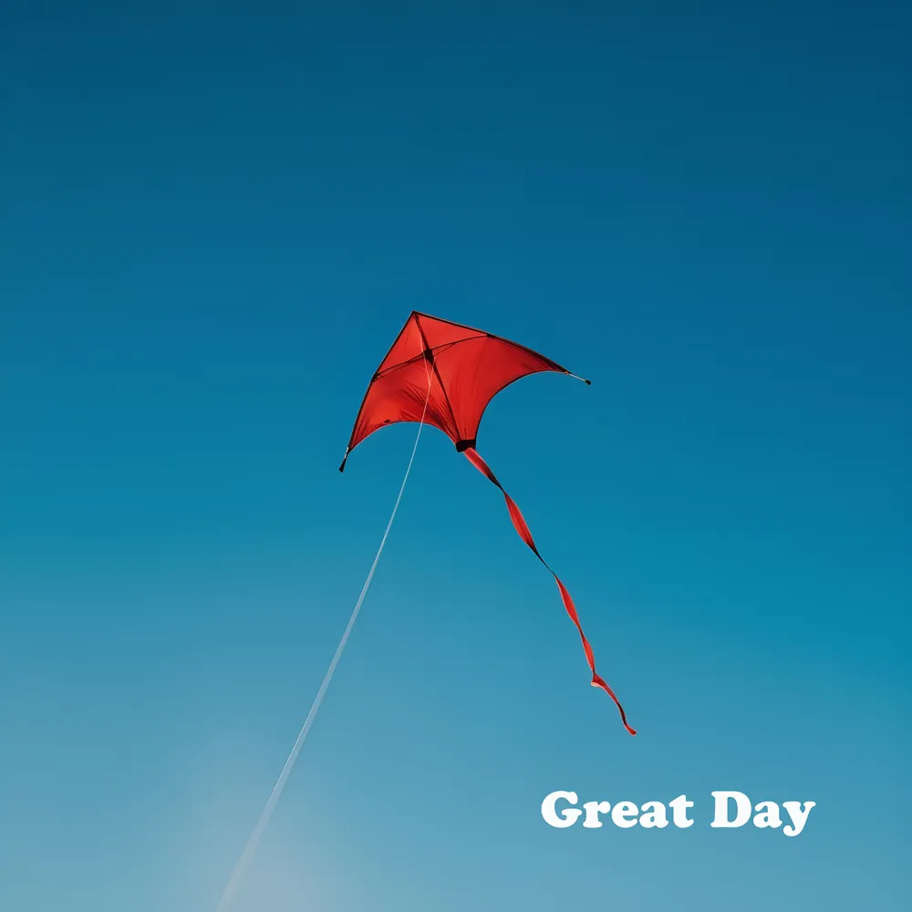
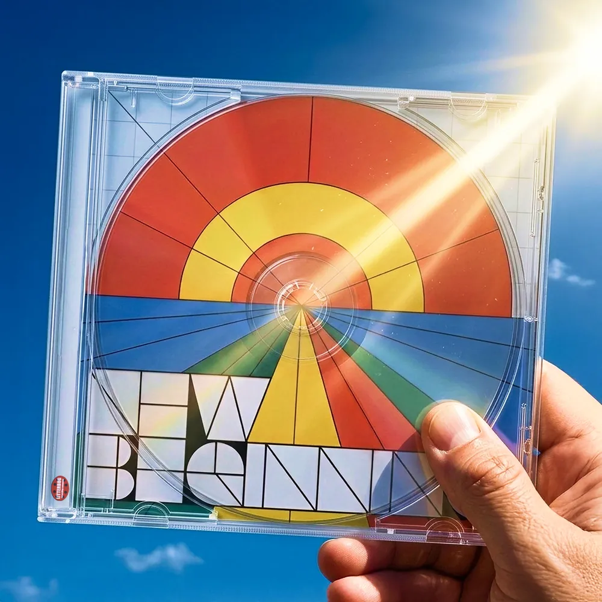
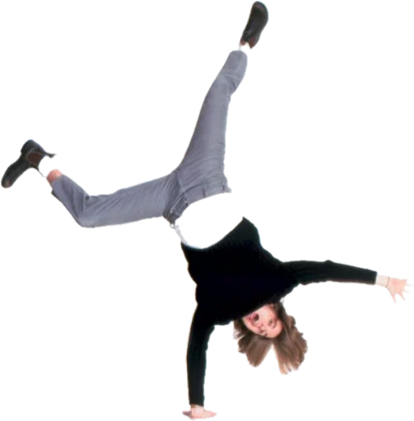
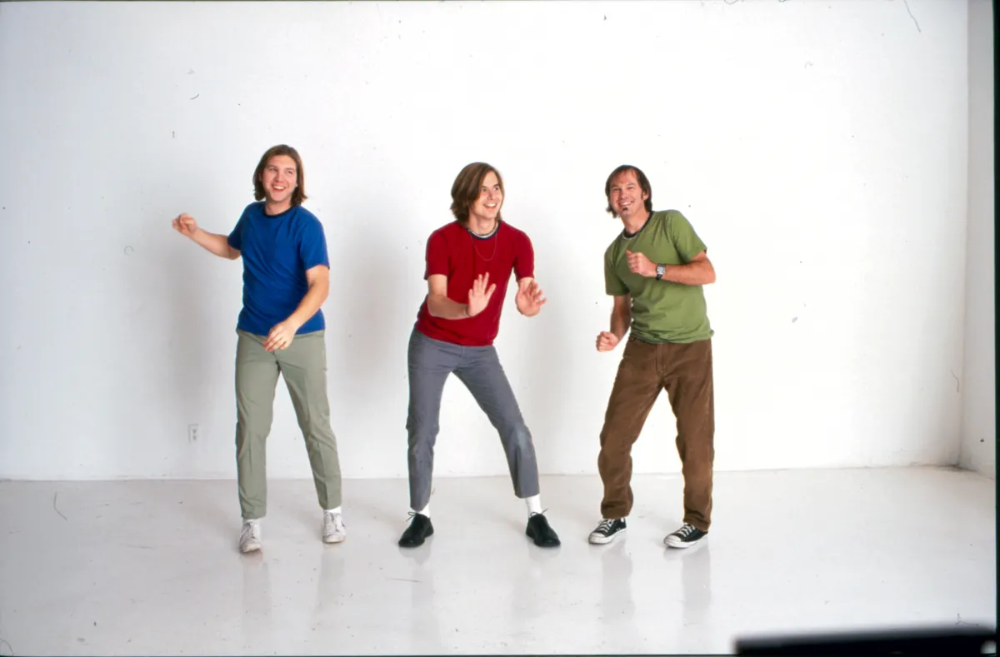
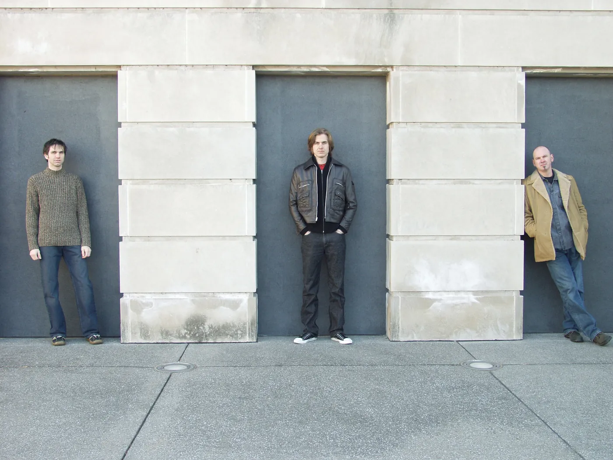

New Beginning
Two tracks, “New Beginning” and “Great Day”.
The Luxury Liners are a power-pop band co-founded in 1997 by David Dewese and Chad Edgington, who took it to Nashville together. The name comes from the Gram Parsons song 'Luxury Liner'.
Founded in 1997. Two new singles in 2026. The band never broke up.
Latest release: New Beginning, April 2026


Two singles in 2026, both written by Chad and David and played by all four forever members. The band never broke up. The four forever members reconnected during the pandemic and started making music again.
Two tracks, “New Beginning” and “Great Day”.
Matching pale-blue suits in 1998, the white-studio sessions around 2000, all four forever members in 2002 and the trio in 2003.







Co-founder. Guitar, bass, lead vocals; writes songs. 1997–
Co-founded the band with Chad in 1997 and carried it on as a trio from 2001.
Co-founder. Guitar, bass, vocals; writes songs. 1997–2001; on the 2026 singles
Co-founded the band with David in 1997. He left Nashville in March 2001, and he plays on “Great Day” and “New Beginning”, which he wrote with David.
Drums, percussion, vocals. 1998–
Joined on drums in August 1998 and painted the pictures on the cover of Nonetheless.
Bass, keyboards, vocals. 2000–
Joined on bass in December 2000. The band already had a David, so he became Larry.